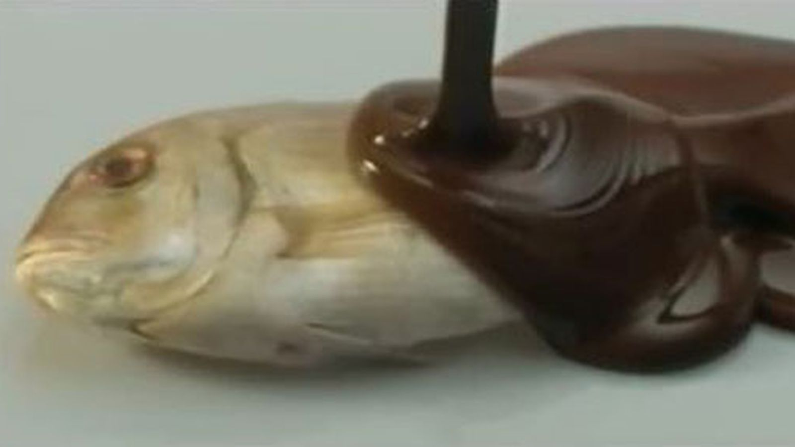

Le fishe au chocolat
Le fishe au chocolat, másnéven csokis hal, egy Franciaországban igen elterjedt desszert, inkább a vidéki területeken. A csokis hal egy igazi csemege, amely meglepően finom ízvilágot hoz létre a sós hal és a sötét csokoládé találkozásából. Garantáltan le fogja nyűgözni az ízlelőbimbóidat és azokat, akikkel megosztod!

Hozzávalók:
- 4 filé lazac vagy más halfajta (kb. 150-200 g/filé)
- 100 g sötét csokoládé (legalább 70% kakaótartalom)
- 2 evőkanál vaj
- 1 teáskanál olívaolaj
- Só és bors ízlés szerint
- Friss petrezselyem vagy snidling apróra vágva (díszítéshez)
Elkészítése:
- Először a sötét csokoládét apróra törd vagy reszeld le, majd tedd bele egy tálba.
- Egy serpenyőben olvaszd fel a vajat és az olívaolajat közepes lángon.
- Amikor a vaj és az olaj felolvadt, keverd hozzá a reszelt csokoládét, és keverd addig, amíg teljesen elolvad, és egy sima, csokoládé szósz lesz belőle.
- Közben melegítsd elő a sütőt 200 Celsius-fokra, és készíts elő egy sütőpapírral bélelt tepsit.
- A lazacfiléket sózd és borsozd ízlés szerint mindkét oldalukon.
- A csokis csokoládészószt óvatosan öntsd a lazacfilék tetejére úgy, hogy jól befedje őket.
- A tepsit tedd a sütőbe, és süsd a halat 12-15 percig, vagy amíg a lazac könnyen széthasad és a csokoládé szósz kezd megszilárdulni.
- Tálald a csokis halat friss petrezselyemmel vagy snidlinggel díszítve.